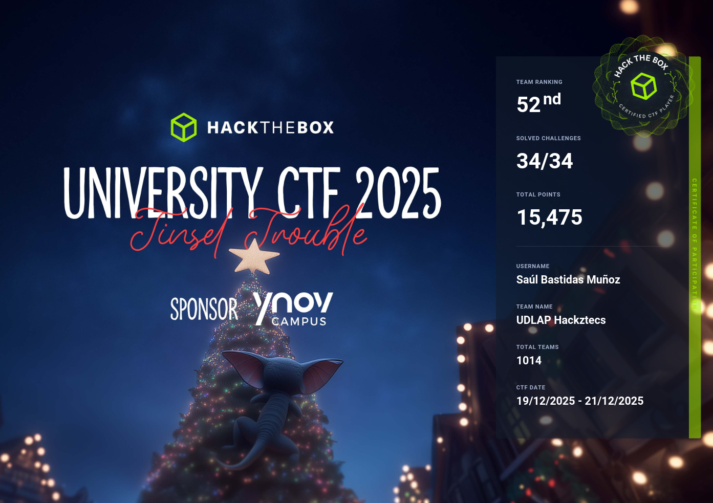

// logro destacado
University CTF 2025 · Tinsel Trouble
Con el equipo UDLAP Hackztecs quedamos en el lugar 52 de 1014 equipos universitarios de todo el mundo, resolviendo los 34 retos del evento.
- ranking52nd / 1014
- retos34 / 34
- puntos15,475
- fecha19–21 dic 2025